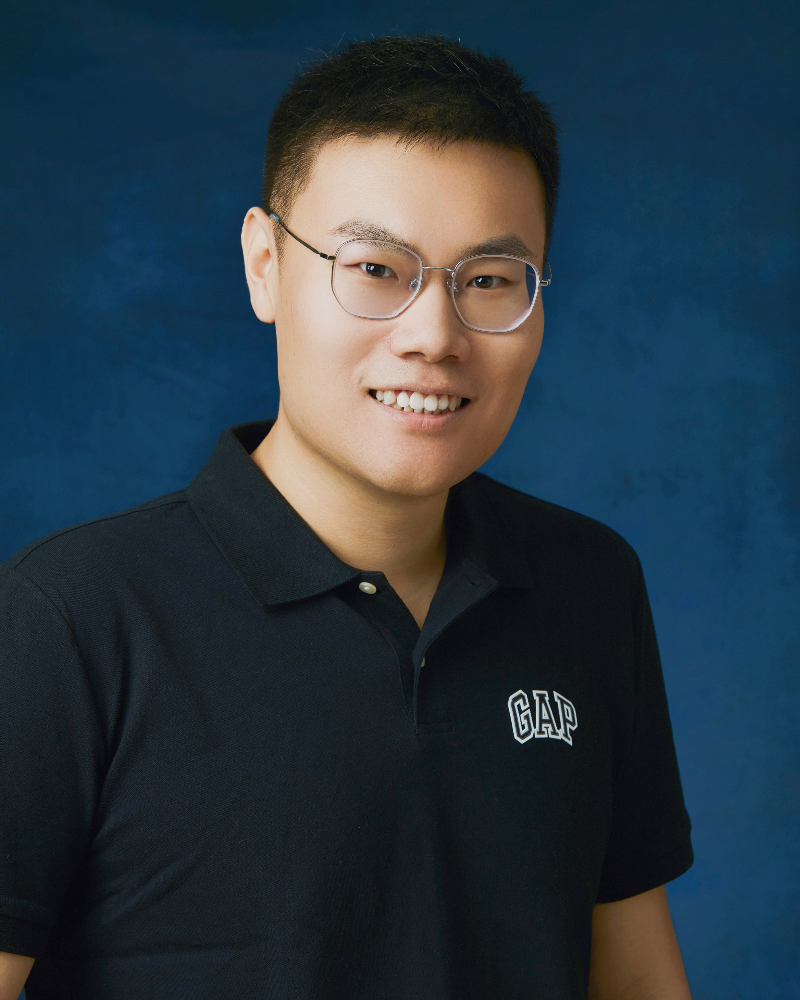

|  | Lecturer (Assistant Professor) [Full CV – Jun. 25] [Official Website] [Google Scholar] [ORCID] [ResearchGate] |
Yakun Ju has been an Assistant Professor (UK Lecturer) in the School of Computing and Mathematical Sciences at the University of Leicester, United Kingdom, since 2024. He is affiliated with the university’s Artificial Intelligence and Machine Learning research group, led by Prof. Huiyu Zhou. Since 2024, he has served as a chair or program committee member for major international conferences such as IEEE ICME, ACM Multimedia, and IEEE ICIP. He also serves as an Associate Editor or Guest Editor for several leading journals, including Applied Soft Computing, Neurocomputing, Pattern Recognition, and Computer Vision and Image Understanding. He is currently a member of the IEEE Signal Processing Society.
Dr. Ju was born in Qingdao, Shandong, China. Before moving to the UK, he worked as a Research Fellow in the ROSE Lab at Nanyang Technological University, Singapore (2023–2024), collaborating with Prof. [Alex Chichung Kot] (SAEng, IEEE Life Fellow). Prior to that, he was a Postdoctoral Fellow at The Hong Kong Polytechnic University (2022–2023), working with Prof. [Kin-Man Lam] (Vice President, IEEE Signal Processing Society).
Dr. Ju received his Ph.D. in Computer Science from Ocean University of China in 2022, with joint research training at the Department of Electrical and Electronic Engineering, The Hong Kong Polytechnic University. His doctoral advisors were Prof. [Junyu Dong] and Prof. [Kin-Man Lam]. He was honored with the ACM China Council Qingdao Chapter Outstanding Doctoral Dissertation Award (2022) and the National Scholarship for Doctoral Students (2020).
Dr. Ju’s research interests include 3D reconstruction, photometric stereo, computational imaging, and underwater visual perception. His work focuses on the development of efficient, physically grounded, and learning-based methods for dense geometry recovery and reflectance analysis under challenging visual environments, such as underwater or medical scenes. His recent research also explores cross-modality and data-driven computational sensing, aiming to bridge physics-informed vision with AI-based perceptual modeling for real-world applications. In these areas, Dr. Ju has authored over 60 peer-reviewed publications in top-tier journals and conferences, including TPAMI, TVCG, TIP, IJCV, NeurIPS, CVPR, etc. He is also the inventor of multiple China national patents on deep learning-based 3D surface reconstruction, which have supported technology transfer applications exceeding 400,000 CNY (approximately 55,000 USD).
Associate Editor/Editorial Board: Applied Soft Computing
Associate Editor/Editorial Board: Neurocomputing
Associate Editor/Editorial Board: Frontiers in Marine Science
Associate Editor/Editorial Board: Intelligent Marine Technology and Systems
Guest Editor: Pattern Recognition-SI:"“Advances in Multimodal-Driven Video Understanding and Assessment"
Guest Editor: Computer Vision and Image understanding-SI:"Advanced Computational Imaging and Photography Measurement"
Guest Editor: Frontiers in Marine Science-SI:"Underwater Visual Signal Processing in the Data-Driven Era"
Guest Editor: Remote Sensing-SI:"Remote Sensing Techniques for 3D Reconstruction and Multimodal Structural Analysis"
Conference Program Chair: IDASS 2024
Conference Workshop Chair Chair: IEEE ICME 2025 Workshop: Multimedia in Underwater Information Processing and Exploration
Conference Program Committee: IEEE ICIP 2024 Workshop: AI4IPo Workshop
Session Chair: IEEE ICME 2023
Revisiting One-stage Deep Uncalibrated Photometric Stereo via Fourier Embedding
Yakun Ju, Boxin Shi, Bihan Wen, Kin-Man Lam, Xudong Jiang, Alex C. Kot
IEEE Transactions on Pattern Analysis and Machine Intelligence (TPAMI), 2025
[Paper]
Deep Learning Methods for Calibrated Photometric Stereo and Beyond
Yakun Ju, Kin-Man Lam, Wuyuan Xie, Huiyu Zhou, Junyu Dong, Boxin Shi
IEEE Transactions on Pattern Analysis and Machine Intelligence (TPAMI), 2024
[Paper]
Normattention-PSN: A High-Frequency Region Enhanced Photometric Stereo Network with Normalized Attention
Yakun Ju, Boxin Shi, Muwei Jian, Lin Qi, Junyu Dong, Kin-Man Lam
International Journal of Computer Vision (IJCV), 2022
[Paper]
Recovering Surface Normal and Arbitrary Images: A Dual Regression Network for Photometric Stereo
Yakun Ju, Junyu Dong, Sheng Chen
IEEE Transactions on Image Processing (TIP), 2021
[Paper]
GR-PSN: Learning to Estimate Surface Normal and Reconstruct Photometric Stereo Images
Yakun Ju, Boxin Shi, Yang Chen, Huiyu Zhou, Junyu Dong, Kin-Man Lam
IEEE Transactions on Visualization and Computer Graphics (TVCG), 2023
[Paper]
Estimating Highresolution Surface Normals via Low-resolution Photometric Stereo Images
Yakun Ju, Muwei Jian, Cong Wang, Cong Zhang, Junyu Dong, Kin-Man Lam
IEEE Transactions on Circuits and Systems for Video Technology (TCSVT), 2023 (ESI Highly Cited Paper)
[Paper]
Incorporating Lambertian Priors into Surface Normals Measurement
Yakun Ju, Muwei Jian, Shaoxiang Guo, Yingyu Wang, Huiyu Zhou, Junyu Dong
IEEE Transactions on Instrumentation and Measurement (TIM), 2021
[Paper]
Underwater Surface Normal Reconstruction via Cross-grained Photometric Stereo Transformer
Yakun Ju, Ling Li, Xian Zhong, Yuan Rao, Yanru Liu, Junyu Dong, Alex C. Kot
IEEE Journal of Oceanic Engineering (JOE), 2024
[Paper]
Towards Marine Snow Removal with Fusing Fourier Information
Yakun Ju, Jun Xiao, Cong Zhang, Hao Xie, Anwei Luo, Huiyu Zhou, Alex C. Kot
Information Fusion (INFFUS), 2024
[Paper]
Learning Conditional Photometric Stereo with High-resolution Features
Yakun Ju, Yuxin Peng, Muwei Jian, Feng Gao, Junyu Dong
Computational Visual Media (CVMJ), 2022
[Paper]
A dual-cue network for multispectral photometric stereo
Yakun Ju, Xinghui Dong, Yingyu Wang, Lin Qi, Junyu Dong
Pattern Recognition (PR), 2020
[Paper]
Learning Conditional Photometric Stereo with High-resolution Features
Yakun Ju, Kin-Man Lam, Yang Chen, Lin Qi, Junyu Dong
International Conference on International Joint Conferences on Artificial Intelligence (IJCAI), 2020
[Paper]
FNIN: A Fourier Neural Operator-based Numerical Integration Network for Surface-from-gradients
Jiaqi Leng, Yakun Ju*, Yuanxu Duan, JiangnanZhang, Qingxuan Lv, Zuxuan Wu, Hao Fan
Annual AAAI Conference on Artificial Intelligence (AAAI), 2025
[Paper]
A deep-shallow and global–local multi-feature fusion network for photometric stereo
Yanru Liu, Yakun Ju*, Muwei Jian, Feng Gao, Yuan Rao, Yeqi Hu, Junyu Dong
Image and Vision Computing (IVC), 2022
[Paper]
A Structure-Affinity Dual Attention-based Network to Segment Spine for Scoliosis Assessment
Hao Xie, Zixun Huang, Frank H.F. Leung, Yakun Ju*, Yong-Ping Zheng, Sai Ho Ling
IEEE International Conference on Bioinformatics and Biomedicine (BIBM), 2023
[Paper]
Exposing Image Splicing Traces in Scientific Publications via Uncertainty-guided Refinement
Xun Lin, Wenzhong Tang, Haoran Wang, Yizhong Liu, Yakun Ju, Shuai Wang, Zitong Yu
Patterns - Cell Press, 2024
[Paper]
Learning General Descriptors for Image Matching with Regression Feedback
Yuan Rao, Yakun Ju, Cong Li, Eric Rigall, Jian Yang, Hao Fan, Junyu Dong
IEEE Transactions on Circuits and Systems for Video Technology (TCSVT), 2023
[Paper]
Learning Enriched Feature Descriptor for Image Matching and Visual Measurement
Yuan Rao, Yakun Ju, Sen Wang, Hao Fan, Junyu Dong
IEEE Transactions on Instrumentation and Measurement (TIM), 2023
[Paper]
3D Hand Pose Estimation from Monocular RGB with Feature Interaction Module
Shaoxiang Guo, Eric Rigall, Yakun Ju, Junyu Dong
IEEE Transactions on Circuits and Systems for Video Technology (TCSVT), 2022
[Paper]
Efficient Inductive Vision Transformer for Oriented Object Detection in Remote Sensing Imagery
Cong Zhang, Jingran Su, Yakun Ju, Kin-Man Lam, Qi Wang
IEEE Transactions on Geoscience and Remote Sensing (TGRS), 2023 (ESI Highly Cited Paper)
[Paper]
Learning General Feature Descriptor for Visual Measurement With Hierarchical View Consistency
Yuan Rao, Jian Yang, Yakun Ju, Cong Li, Eric Rigall, Hao Fan, Junyu Dong
IEEE Transactions on Instrumentation and Measurement (TIM), 2022
[Paper]
Flow-Edge-Net: Video Saliency Detection Based on Optical Flow and Edge-Weighted Balance Loss
Muwei Jian, Xiangwei Lu, Xiaoyang Yu, Yakun Ju, Hui Yu, Kin-Man Lam
IEEE Transactions on Computational Social Systems (TCSS), 2023
[Paper]
pmBQA: Projection-based Blind Point Cloud Quality Assessment via Multimodal Learning
Wuyuan Xie, Kaimin Wang, Yakun Ju, Miaohui Wang
ACM International Conference on Multimedia (MM), 2023
[Paper]
Towards Progressive Multi-Frequency Representation for Image Warping
Jun Xiao, Zihang Lyu, Cong Zhang, Yakun Ju, Changjian Shui, Kin-Man Lam
IEEE Conference on Computer Vision and Pattern Recognition (CVPR), 2024
[Paper]
Promptrestorer: A prompting image restoration method with degradation perception
Cong Wang, Jinshan Pan, Wei Wang, Jiangxin Dong, Mengzhu Wang, Yakun Ju, Junyang Chen
Advances in Neural Information Processing Systems (NeurIPS), 2023
[Paper]
3D human face portraits generation with mobile devices, Singapore A*STAR BMRC Strategic Positioning Fund, CI
Advanced AI and image processing techniques for film restoration and movie analysis, Hong Kong Innovation and Technology Commission Fund, CI
Research on key technologies of lightweight dense surface twinning based on normal map, National Natural Science Foundation of China, CI
Research and development of underwater optical high-resolution three-dimensional imager, National Major Scientific Instruments and Equipments Development Project of China, SI
Cooperative research and development of underwater high-precision three-dimensional real-time detection and analysis system, Key Program for International Science and Technology Cooperation Projects of China, SI
Photometric Stereo: A dense shape recovery method. Online, 29. Oct. 2023: School of Electronic Information and Communications, Huazhong University of Science and Technology
Deep Learning-based Calibrated Photometric Stereo: Review & Future. Beijing, China, 23. Apr. 2023: China3DV 2023
Data-Driven Photometric Stereo. Shenzhen, China, 14. Sept. 2022: School of Computer Science and Software Engineering, Shenzhen University
Data-Driven Photometric Stereo. Qingdao, China, 11. Dec. 2021: CCF China Intelligent Robot Academic Annual Conference 2021
ACM China Council Qingdao Chapter Outstanding Doctoral Dissertation Award, 2022
National Scholarship for Doctoral Students, 2020
Outstanding Graduates of Shandong Province, 2022
Inspur Scholarship, 2021
Goers Acoustic Scholarship, 2017
A Single Frame Image 3D Reconstruction Device and Method Based on Deep Learning, CN107862741A, Yakun Ju, Junyu Dong, Lin Qi, Liang Lu
High-frequency Region Enhancement Photometric Stereo Method Based on Deep Learning, CN110060212A, Yakun Ju, Junyu Dong, Feng Gao
Multispectral photometric stereo surface normal recovery method based on deep learning, CN113936117A, Yakun Ju, Junyu Dong, Lin Qi
A Transformer-based face image super-resolution method, CN113191953A, Muwei Jian, Rui Wang, Xing Wang, Yakun Ju, etc.
A method for grading diabetic retinopathy based on a three-stage attention network, CN115587979A, Muwei Jian, Hongyu Chen, Rui Wang, Yakun Ju, etc.
Low-resolution face super-resolution and recognition method based on facial prior knowledge, CN113128467A, Muwei Jian, Rui Wang, Xing Wang, Ji Chen, Yakun Ju, etc.
Mixed facial component recognition method based on non-uniform illumination face image enhancement, CN113239823A, Muwei Jian, Rui Wang, Xing Wang, Chengdong Li, Yakun Ju, etc.